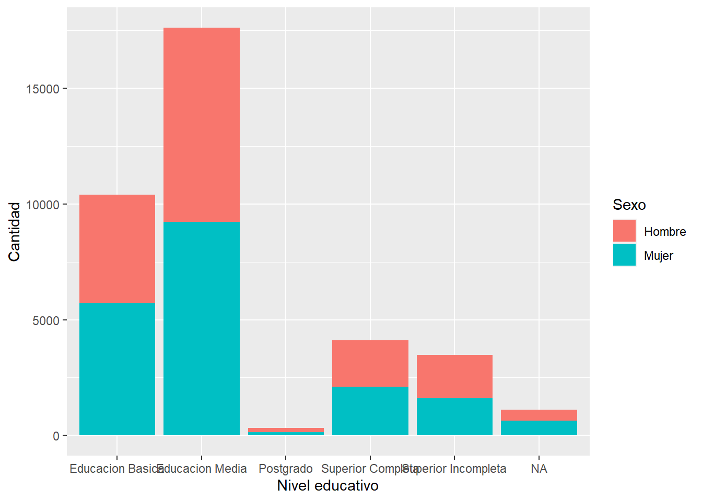
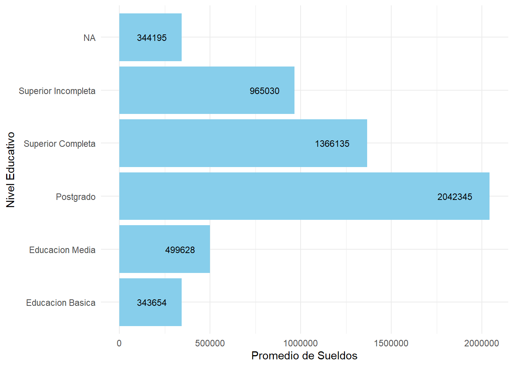

# Limpiar entorno --------------------------------------------------------------
rm(list = ls())
# Cargar paquetes --------------------------------------------------------------
pacman::p_load(tidyverse, sjmisc, sjPlot, ggplot2)
# Cargar datos -----------------------------------------------------------------
datos_proc = readRDS("Output/casen2006.rds")Trabajo2
Seleccion de variables
Para trabajar en el analisis se ha decidio utilizar la encuesta de caracterizacion economica (CASEN) del año 2006 para poder hondar en los primeros datos de dicha epoca.
Las variables seleccionadas para esta investigacion se han delimitado a las siguientes (sexo, edad, e8t, r_15) puesto que se pudo construir informacion valiosa respecto a la investigacion con estas variables.
Sexo: Esta variable dicotomica se refiere al sexo de las observaciones del estudio, distinguiendolo entre mujer o hombre. La inclusión de esta variable nos permite examinar diferencias o similitudes entre hombres y mujeres en relación ccon las demas variable seleccionadas
Edad: S e ha decidido utilizar la variable de edad para poder establecer distintos rangos etarios (Hombre adulto, Mujer adulta, Mujer mayor, Hombre Mayor) asi establecer comparacion en funcion de los valores que nos entrega esta variable.Por lo tanto, incluir esta variable nos permite explorar cómo diferentes grupos de edad pueden responder o comportarse de manera distinta en relación con nuestras variables de interés.
e8t: Esta variable representa el nivel educativo logrado por aquellas personas que respondieron la encuesta, sin embargo se ha decidido para el objetivo de este analisis segmentar los niveles educativos entre Educacion basica completa, Educacion Media, Educacion superior completa, Educacion superior incompleta y Postgrado
r_15: Esta variable nos ayudara a delimitar nuestro analisis unicamente para las observaciones tomadas en la region metropolitana, reduciendo asi el nivel de observaciones y permitiendonos agilizar nuestro analisis.
ingreso: Con esta variable buscaremos esclarecer la capacidad de movilidad social respecto del ingreso de la persona encuestada.
Con esta seleccion de variables se buscara establecer la existencia o no de la movilidad social en funcion del nivel educativo que las personas presenten y el ingreso que estas puedan percibir.
Procesamiento de datos.
Tabla 1.1
Acontinuacion expondremos los datos en diferentes tablas para tener una mejor perspectiva respecto al orden que los datos toman en funcion de la edad y el nivel educativo.
frq(datos_proc$prom_ing_educ)x <integer>
# total N=37040 valid N=37040 mean=604126.06 sd=347252.39
Value | N | Raw % | Valid % | Cum. %
------------------------------------------
343654 | 10407 | 28.10 | 28.10 | 28.10
344195 | 1122 | 3.03 | 3.03 | 31.13
499628 | 17608 | 47.54 | 47.54 | 78.66
965030 | 3469 | 9.37 | 9.37 | 88.03
1366135 | 4121 | 11.13 | 11.13 | 99.15
2042345 | 313 | 0.85 | 0.85 | 100.00
<NA> | 0 | 0.00 | <NA> | <NA>sjt.xtab(datos_proc$educa, datos_proc$sexo_edad,
show.summary = T,
show.col.prc = T,
show.row.prc = T)| educa | sexo_edad | Total | |||||
|---|---|---|---|---|---|---|---|
| Hombre adulto | Hombre joven | Hombre mayor | Mujer adulta | Mujer joven | Mujer mayor | ||
| Educacion Basica | 2413 23.2 % 35.7 % |
1182 11.4 % 14 % |
1104 10.6 % 57.3 % |
3001 28.8 % 39.4 % |
1124 10.8 % 13 % |
1583 15.2 % 63.2 % |
10407 100 % 29 % |
| Educacion Media | 3060 17.4 % 45.2 % |
4708 26.7 % 55.8 % |
612 3.5 % 31.8 % |
3441 19.5 % 45.2 % |
5026 28.5 % 58 % |
761 4.3 % 30.4 % |
17608 100 % 49 % |
| Postgrado | 81 25.9 % 1.2 % |
78 24.9 % 0.9 % |
16 5.1 % 0.8 % |
57 18.2 % 0.7 % |
74 23.6 % 0.9 % |
7 2.2 % 0.3 % |
313 100 % 0.9 % |
| Superior Completa | 894 21.7 % 13.2 % |
977 23.7 % 11.6 % |
147 3.6 % 7.6 % |
900 21.8 % 11.8 % |
1079 26.2 % 12.4 % |
124 3 % 5 % |
4121 100 % 11.5 % |
| Superior Incompleta | 317 9.1 % 4.7 % |
1488 42.9 % 17.6 % |
48 1.4 % 2.5 % |
218 6.3 % 2.9 % |
1368 39.4 % 15.8 % |
30 0.9 % 1.2 % |
3469 100 % 9.7 % |
| Total | 6765 18.8 % 100 % |
8433 23.5 % 100 % |
1927 5.4 % 100 % |
7617 21.2 % 100 % |
8671 24.1 % 100 % |
2505 7 % 100 % |
35918 100 % 100 % |
| χ2=5795.297 · df=20 · Cramer's V=0.201 · p=0.000 | |||||||
Como podemos apreciar en la primera tabla la educacion media posee un porcentaje de 49% de la poblacion total que ha terminado la educacion media, es decir, el otro 51% de los datos se encunetran repartidos entre los distintos niveles edicativos dejando como siguiente segmento predominante a la educacion basica con un 29% del total de la poblacion. El dato interesante que podemos observar en la primera tabla es que solo un 0,9% de la poblacion estudio y completo el postgrado y un 11,5% completo la educacion superior dejando solo un 9,7% de la poblacion con la educacion superior incompleta.
Tabla 1.2
sjt.xtab(datos_proc$educa, datos_proc$sexo,
show.summary = T,
show.col.prc = T,
show.row.prc = T)| educa | sexo | Total | |
|---|---|---|---|
| Hombre | Mujer | ||
| Educacion Basica | 4699 45.2 % 27.4 % |
5708 54.8 % 30.4 % |
10407 100 % 29 % |
| Educacion Media | 8380 47.6 % 48.9 % |
9228 52.4 % 49.1 % |
17608 100 % 49 % |
| Postgrado | 175 55.9 % 1 % |
138 44.1 % 0.7 % |
313 100 % 0.9 % |
| Superior Completa | 2018 49 % 11.8 % |
2103 51 % 11.2 % |
4121 100 % 11.5 % |
| Superior Incompleta | 1853 53.4 % 10.8 % |
1616 46.6 % 8.6 % |
3469 100 % 9.7 % |
| Total | 17125 47.7 % 100 % |
18793 52.3 % 100 % |
35918 100 % 100 % |
| χ2=83.705 · df=4 · Cramer's V=0.048 · p=0.000 | |||
Asimismo en la segunda tabla la variable sexo y nivel educativo nos permiten ver con mayor facilidad la brecha educacional entre generos y lo sorprendente es que por supuesto existe una diferencia entre estos, más no representa una brecha considerable, pero la brecha existente pone a las mujeres como el genero con mayor porcentaje de niveles educativos completados a diferencia de los hombres que predominan en la educacion superior incompleta.
Grafico 2.1
graph3 <- datos_proc %>% ggplot(aes(x = educa, fill = sexo)) +
geom_bar() +
xlab("Nivel educativo") +
ylab("Cantidad") +
labs(fill="Sexo")+
scale_fill_discrete(labels = c('Hombre','Mujer'))
graph3
En las siguientes visulizaciones buscaremos evidenciar los datos correlacionados entre las variables promedio de ingreso y nivel educativo.
Tabla 1.4
tabla = unique(datos_proc[, c("educa", "prom_ing_educ")])
tabla# A tibble: 6 × 2
educa prom_ing_educ
<chr> <int>
1 Superior Completa 1366135
2 Educacion Basica 343654
3 Educacion Media 499628
4 Superior Incompleta 965030
5 Postgrado 2042345
6 <NA> 344195Como bien podemos apreciar en el grafico, las variables nivel educativo (educa) y promedio de sueldos (prom_ing_educ) los valores se presentan en aumento en funcion del nivel educativo, este patrón sugiere una correlación positiva entre la educación y el salario, es decir, a mayor nivel educativo, mayor es el ingreso salarial.
Para visualizar los siguientes datos se ha construido un grafico de barras para esclarecer y facilitar la informacion.
Grafico 2.2 (Promedio ingreso y Nivel Educativo)
ggplot(tabla, aes(x = prom_ing_educ, y = educa)) +
geom_col(fill = "skyblue") +
geom_text(aes(label = prom_ing_educ), hjust = 1.5, size = 3, color = "black") +
labs(x = "Promedio de Sueldos", y = "Nivel Educativo") +
theme_minimal()
Resultados
En este estudio, se observa una relación significativa entre el nivel educativo y el ingreso salarial. Los datos muestran consistentemente que a medida que aumenta el nivel educativo de un individuo, su ingreso salarial tiende a incrementarse.
Es decir que podemos comprobar en funcion de esta base de datos que para el año 2006 la educacion y/o el nivel educativo si representaba una variable fundamental para la movilidad social, puesto que como se pudo apreciar el nivel educativo posee una relacion directa con el salario perceibido por las personas, por tanto la educacion si posee una importancia sustancial planteada en la hipotesis, en este caso en la region metropolitana aquellas personas que poseen un nivel educativo para el año 2006 si podian experimentar la ovilidad social y en este caso de manera ascendente, entre las clases sociales.
La pregunta que queda en juego con esta investigacion es si acaso esta cualidad ascendente propia del nivel educativo se ha mantenido en el tiempo o si acaso esta ya ha perdido su valor respecto a la capacidad de jercer o no la movilidad social.
En resumen, los datos recopilados sugieren que existe una relación positiva entre el nivel educativo y el ingreso salarial, lo que indica que la educacion para el año 2006 representaba una herramineta para ascender en la primaide social.
References
Erikson, Robert, and John H. Goldthorpe. 2010. “Has Social Mobility in Britain Decreased? Reconciling Divergent Findings on Income and Class Mobility.” The British Journal of Sociology 61 (2): 211–30. https://doi.org/10.1111/j.1468-4446.2010.01310.x.
Erzsébet Bukodi, Erzsébet Bukodi, John H. Goldthorpe, and John H. Goldthorpe. 2016. “Educational Attainment - Relative or Absolute - as a Mediator of Intergenerational Class Mobility in Britain.” Research in Social Stratification and Mobility 43 (43): 5–15. https://doi.org/10.1016/j.rssm.2015.01.003.
Erzsébet Bukodi, Erzsébet Bukodi, John H. Goldthorpe, John H. Goldthorpe, John H. Goldthorpe, Lorraine Waller, Lorraine Waller, Jouni Kuha, and Jouni Kuha. 2015. “The Mobility Problem in Britain: New Findings from the Analysis of Birth Cohort Data.” British Journal of Sociology 66 (1): 93–117. https://doi.org/10.1111/1468-4446.12096.
John H. Goldthorpe, John H. Goldthorpe, John H. Goldthorpe, and John H. Goldthorpe. 2004. “Trends in Intergenerational Class Mobility in Britain in the Late Twentieth Century,” August, 195–224. https://doi.org/10.1093/0199258457.003.0008.